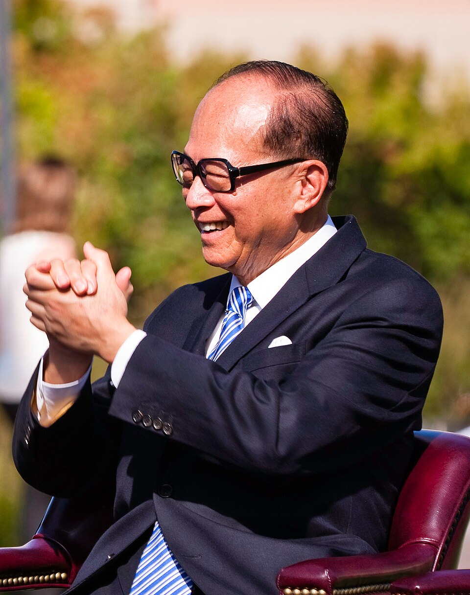
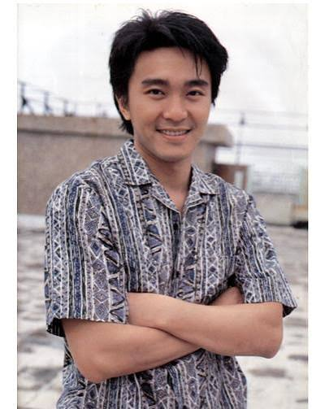
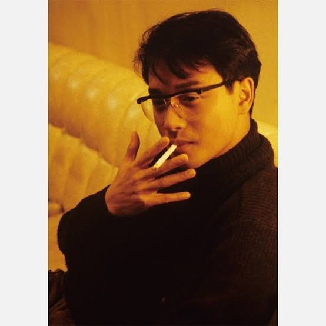

李 嘉誠（り かせい、広東語読み：レイ・カーセン、Sir Li Ka-shing GBM KBE Commander, 英語：Li Ka Shing, 1928年7月29日 -
）は、香港最大の企業集団・長江実業グループ創設者兼会長である。2013年度世界長者番付によれば、その資産は310億米ドルとされ、世界8位の富豪である。かつてはアジア全域で最も富裕な人物であり、華人としては世界一の資産家であった。
「何よりもまず、私は楽観主義者である。一生懸命学び、働けば、知識が増え、自信が備わる。知れば知るほど、自信が備わるのだ。」
努力と学びがもたらす自信の大切さを説いた言葉です。

香港の喜劇王であるチャウ・シンチー（周星馳）の映画は、「無厘頭（モウレイトウ：ナンセンス、おバカ）」と呼ばれる独自のコメディスタイルでありながら、人生の本質や小人物の哀愁を突いた心に刺さる名言・名セリフが多く存在します。
「做人如果冇夢想，同條鹹魚有咩分別呀？」
（人間、もし夢がなかったら、干物（塩魚）と何の違いがあるって言うんだ？）

「自分の作品に満足したことはないよ。満足したら成長が止まるからね。」
「この広大な宇宙で人々の人生は平行線を辿りながら孤独に進んでいく。」
「人間は万華鏡のようだ」